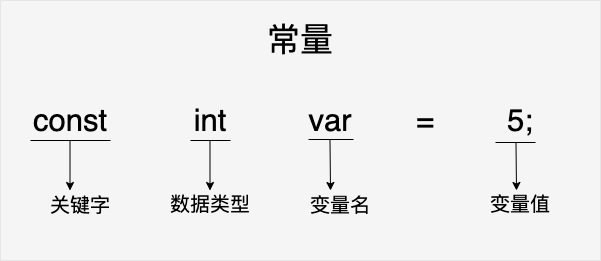
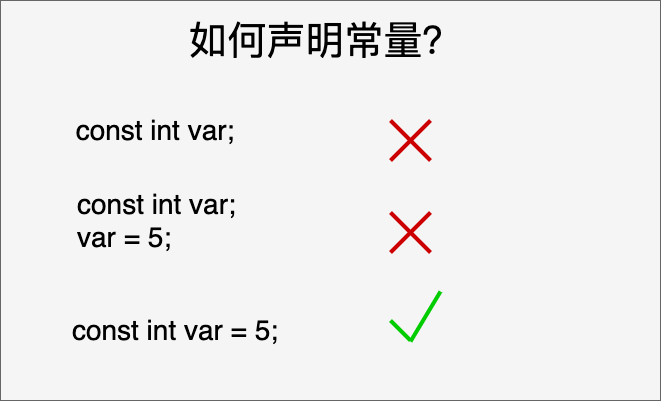

C 定数
定数は固定値であり、プログラムの実行中に変わりません。これらの固定値は、別名リテラル。
定数は任意の基本データ型にすることができます。たとえば、整数定数、浮動小数点定数、文字定数、文字列リテラル、また列挙定数もあります。
定数通常の変数のようなものですが、定数の値は定義後に変更できないだけです。
定数はコード内で直接使用することも、定数を定義して使用することもできます。
整数定数
整数定数は、10進数、8進数、または16進数の定数です。接頭辞は基数を指定します: 0x または 0X は16進数、0 は8進数を表し、接頭辞がない場合は10進数を表します。
整数定数には接尾辞を付けることもできます。接尾辞は U と L の組み合わせで、U は符号なし整数（unsigned）、L は長整数（long）を表します。接尾辞は大文字でも小文字でもよく、U と L の順序は任意です。
以下にいくつかの整数定数の例を示します：
212 /* 合法的 */ 215u /* 合法的 */ 0xFeeL /* 合法的 */ 078 /* 非法的：8 不是八进制的数字 */ 032UU /* 非法的：不能重复后缀 */
以下はさまざまな型の整数定数の例です：
85 /* 十进制 */ 0213 /* 八进制 */ 0x4b /* 十六进制 */ 30 /* 整数 */ 30u /* 无符号整数 */ 30l /* 长整数 */ 30ul /* 无符号长整数 */
整数定数にはデータ型を表す接尾辞を付けることができます。例：
例
long myLong = 100000L;
unsigned int myUnsignedInt = 10U;
浮動小数点定数
浮動小数点定数は、整数部、小数点、小数部、指数部から構成されます。浮動小数点定数は、小数形式または指数形式で表現できます。
小数形式で表す場合は、整数部、小数部、またはその両方を含める必要があります。指数形式で表す場合は、小数点、指数、またはその両方を含める必要があります。符号付き指数は e または E で導入されます。
以下にいくつかの浮動小数点定数の例を示します：
3.14159 /* 合法的 */ 314159E-5L /* 合法的 */ 510E /* 非法的：不完整的指数 */ 210f /* 非法的：没有小数或指数 */ .e55 /* 非法的：缺少整数或分数 */
浮動小数点定数にはデータ型を表す接尾辞を付けることができます。例：
例
double myDouble = 3.14159;
文字定数
文字定数は単一引用符で囲まれます。たとえば、'x' はcharchar 型の単純な変数に格納できます。
文字定数は、普通の文字（例: 'x'）、エスケープシーケンス（例: '\t'）、またはユニバーサル文字（例: '\u02C0'）のいずれかです。
C には、特定の文字の前にバックスラッシュを付けると特別な意味を持つものがあり、改行（\n）やタブ（\t）などを表すために使われます。次の表に、そのようなエスケープシーケンスコードの一部を示します：
| エスケープシーケンス | 意味 |
|---|---|
| \\ | \ 文字 |
| \' | ' 文字 |
| \" | " 文字 |
| \? | ? 文字 |
| \a | 警告ベル |
| \b | バックスペース |
| \f | 改ページ |
| \n | 改行 |
| \r | 復帰 |
| \t | 水平タブ |
| \v | 垂直タブ |
| \ooo | 1桁から3桁の8進数 |
| \xhh . . . | 1つまたは複数の数字の16進数 |
次の例は、いくつかのエスケープシーケンス文字を示しています：
例
上記のコードがコンパイルおよび実行されると、次の結果が生成されます：
Hello World
文字定数の ASCII 値は、型キャストによって整数値に変換できます。
例
int myAsciiValue = (int) myChar; // myChar を ASCII 値 97 に変換します
文字列定数
文字列リテラルまたは定数は二重引用符" "で囲まれます。文字列には、文字定数と同様の文字（普通の文字、エスケープシーケンス、ユニバーサル文字）が含まれます。
空白を区切り文字として使用して、非常に長い文字列定数を複数行に分割できます。
次の例は、いくつかの文字列定数を示しています。次の3つの形式で表示される文字列は同じです。
"hello, dear" "hello, \ dear" "hello, " "d" "ear"
文字列定数はメモリ内でnull終端文字\0で終わります。例：
char myString[] = "Hello, world!"; //系统对字符串常量自动加一个 '\0'
定数の定義
C には、定数を定義する簡単な方法が2つあります：
- 使用#defineプリプロセッサ: #define はプログラム内で定数を定義でき、コンパイル時にその対応する値に置き換えられます。
- 使用constキーワード: const キーワードは読み取り専用変数を宣言するために使用されます。つまり、その変数の値はプログラムの実行中に変更できません。
#define プリプロセッサ
以下は #define プリプロセッサを使用して定数を定義する形式です：
#define 常量名 常量值
次のコードは、PI という名前の定数を定義しています：
#define PI 3.14159プログラムでこの定数を使用すると、コンパイラはすべての PI を 3.14159 に置き換えます。
具体的には次の例を参照してください：
例
上記のコードがコンパイルおよび実行されると、次の結果が生成されます：
value of area : 50
const キーワード
次に示すように、constconst プレフィックスを使用して、指定の型の定数を宣言します：
const 数据类型 常量名 = 常量值;
次のコードは、MAX_VALUE という名前の定数を定義しています：
const int MAX_VALUE = 100;プログラムでこの定数を使用すると、その値は常に100になり、変更できません。

const による定数の宣言は、1つの文で完了する必要があります：

具体的には次の例を参照してください：
例
上記のコードがコンパイルおよび実行されると、次の結果が生成されます：
value of area : 50
定数を大文字形式で定義することは、良いプログラミング習慣であることに注意してください。
#define と const の違い
#define と const はどちらも定数の定義に使用できます。どちらを選択するかは、具体的な要件とプログラミング習慣によって異なります。通常は、const キーワードを使用して定数を定義することをお勧めします。const は型チェックとスコープの利点があり、#define は単純なテキスト置換のみを行うため、予期しない問題が発生する可能性があります。
#define プリプロセッサディレクティブと const キーワードには、定数を定義する際にいくつかの違いがあります：
置換メカニズム：
#define#define は単純なテキスト置換を行いますが、constconst は型を持つ定数を宣言します。#define#define で定義された定数はコンパイル時にその対応する値に直接置き換えられますが、constconst で定義された定数は、プログラムの実行時にメモリが割り当てられ、型情報を持ちます。型チェック：
#define#define は型チェックを行いません。単純なテキスト置換のみを行うためです。一方、constconst で定義された定数は型情報を持ち、コンパイラはそれを型チェックできます。これは潜在的な型エラーを検出するのに役立ちます。スコープ：
#define#define で定義された定数にはスコープの制限がなく、定義後のコード全体で有効です。一方、constconst で定義された定数はブロックレベルのスコープを持ち、その定義が置かれているスコープ内でのみ有効です。デバッグとシンボルテーブル：
#define#define で定義された定数は、シンボルテーブルに対応するエントリがありません。単なるテキスト置換であるためです。一方、constconst で定義された定数は、シンボルテーブルに対応するエントリがあり、デバッグと可読性に役立ちます。